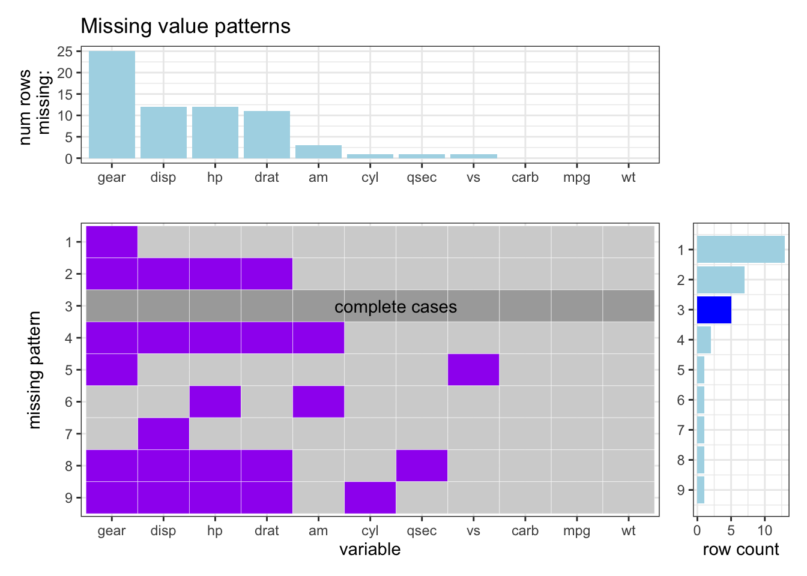
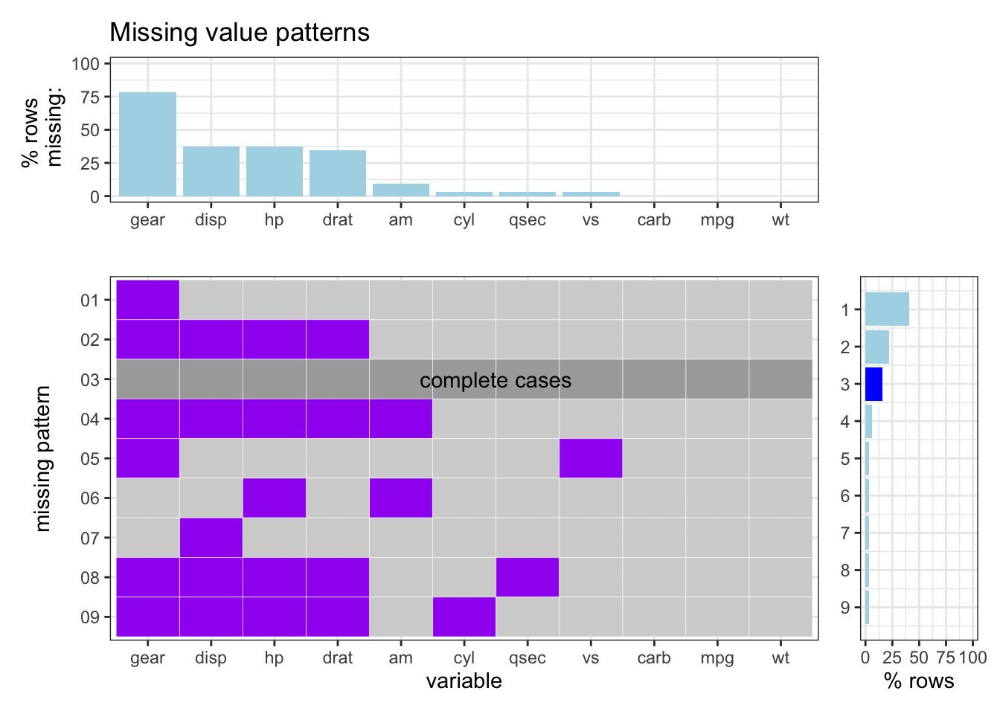
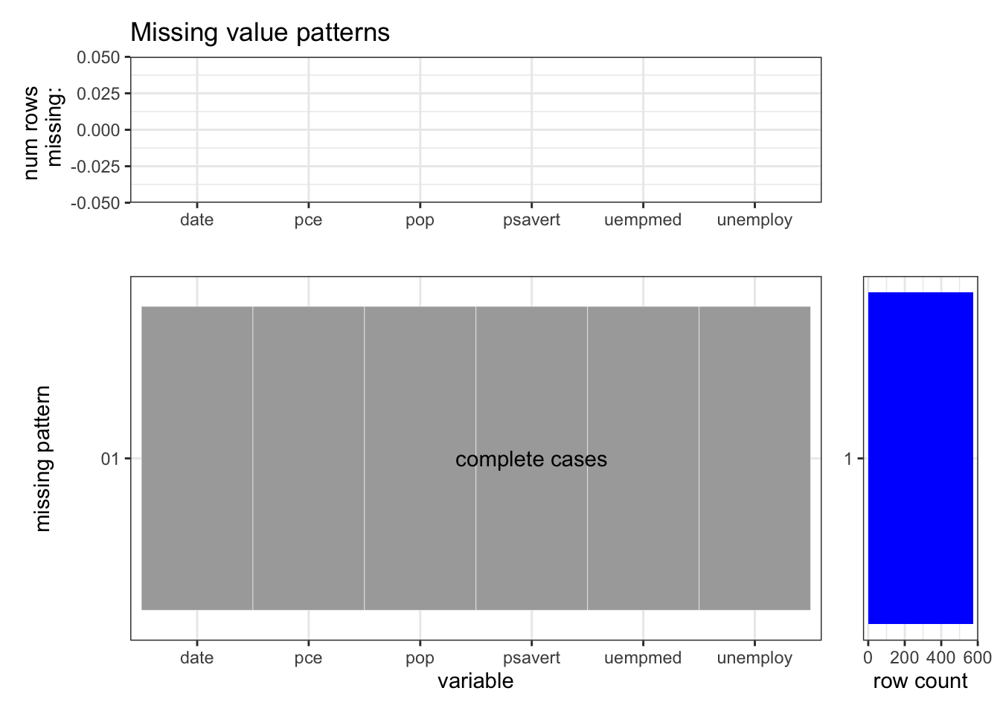
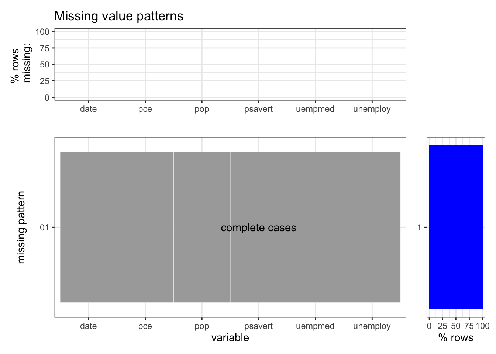
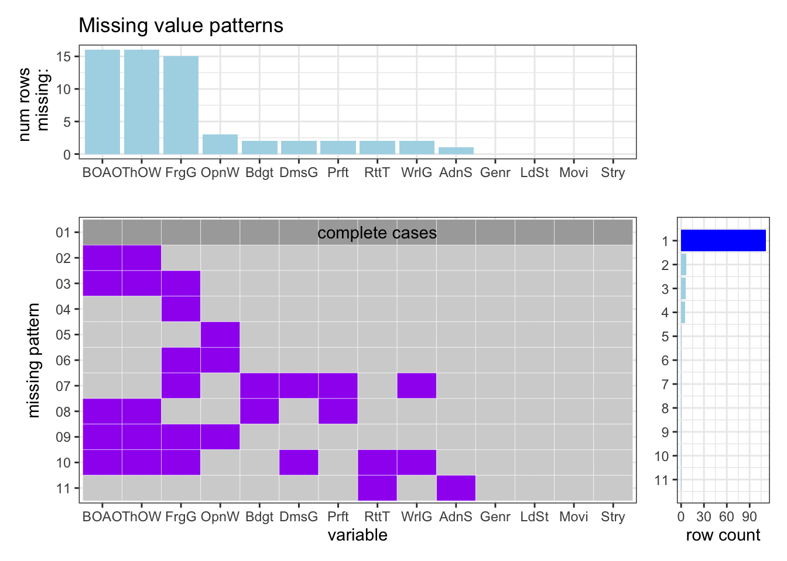
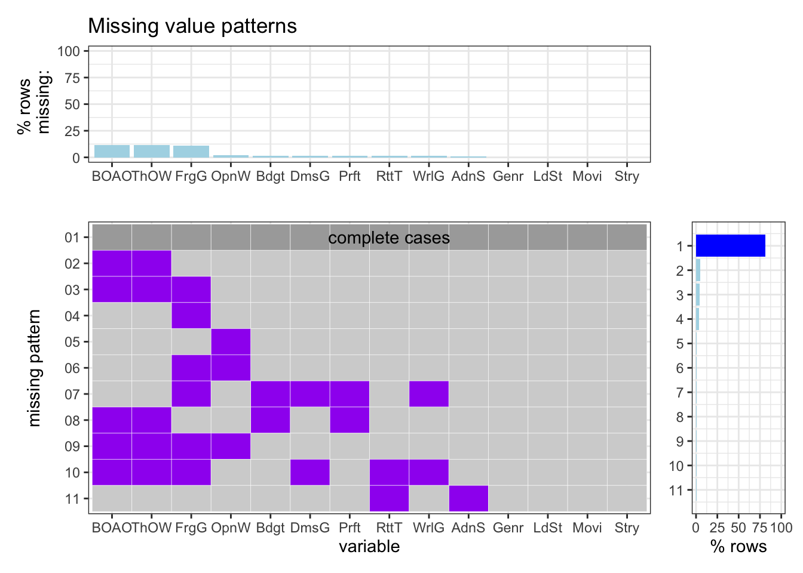

Chapter 7 Conclusion
We have shown factors connected to negative opinions towards China, and analyzed them on both individual and national scales. The results suggest that both covid and socio-economic factors have an effect on the increasing negative impact on China. However, it is suggested that covid itself further pushed opinions to the negative side, and certain covid-related factors are significant on both individual and national scales.
One limitation is that most plots give correlational information, and to address that we tried to inject more causal information through different dimensions of analysis. One example is analyzing not just current atittudes, but also attitudes across time along with other variables, such as one variable that is significant across all experiments: opinion on how China handled covid. Even so, the limitation remains and we should be encouraged to think beyond what the data represents. There could always be an omitted variable bias, that is, something latent that leads to both negative thinking about the way China handled covid and opinion towards China in general. A future direction is thinking about what could these latent variables be. Possible candidates include the perception of democracy and the culture of media, which could lead to criticism against both China’s stoic covid policies and China itself.
Note: Grading is based both on your graphs and verbal explanations. Follow all best practices as discussed in class, including choosing appropriate parameters for all graphs. Do not expect the assignment questions to spell out precisely how the graphs should be drawn. Sometimes guidance will be provided, but the absense of guidance does not mean that all choices are ok.
IMPORTANT: THIS TEMPLATE DOES NOT INCLUDE THE SAMPLE GRAPHS THAT APPEAR IN THE .HTML VERSION OF THE ASSIGNMENT SO BE SURE TO VIEW THAT FILE AS WELL.
7.0.1 1. mycars missing patterns
Create a missing values plot for the mycars dataset created below (slightly different from the one in the lecture slides). Your plot should be in the style of extracat::visna() (no longer available on CRAN) using ggplot2 to create the main plot and two side plots and patchwork to put them together. It should show accurately: missing patterns, counts for missing by column and missing by pattern, and make it clear which row respresents complete cases. Bars in the side plots should be sorted and correspond to the rows and columns of the main plot. An example is provided though the aesthetics of your plot do not have to conform precisely to the example. Some code is provided to get you started with finding missing patterns. (Keep in mind that in the next question you will be turning this code into a function so to save yourself time later on write as generically as possible.)
library(tidyverse)
library(patchwork)
# Add NAs to mtcars dataset
set.seed(5702)
mycars <- mtcars
mycars[1:25, "gear"] <- NA
mycars[10:20, 3:5] <- NA
for (i in 1:10) mycars[sample(32,1), sample(11,1)] <- NAHints:
- You can use this code to find and count the missing patterns:
missing_patterns <- data.frame(is.na(mycars)) %>%
group_by_all() %>%
count(name = "count", sort = TRUE) %>%
ungroup()tidypatterns <- missing_patterns[,1:11] %>%
rownames_to_column("id") %>%
gather(key, value, -id) complete_bool = rowSums(missing_patterns[,1:11]) == 0
complete_row = which(complete_bool)
tidypatterns <- tidypatterns %>%
mutate( ToHighlight = ifelse(id %in% complete_row, "TRUE", "FALSE" ) )
tidypatterns <- tidypatterns %>%
mutate( color = as.factor(as.integer(!value)+as.integer(as.logical(ToHighlight))) )missing_patterns2<-missing_patterns[1:11]
missing_patterns2 <- missing_patterns2 %>%
mutate( ToHighlight = ifelse(rowSums(.)==0, "TRUE", "FALSE" ) )
missing_patterns['ToHighlight'] = missing_patterns2['ToHighlight']p1<-tidypatterns %>%
mutate(key = fct_reorder(key,-value,.fun='sum')) %>%
ggplot(aes(x = key,y = fct_rev(id), fill = color))+
geom_tile(color = "white") +
scale_fill_manual(values = c('0'="purple",'1'="light grey",'2'="dark grey"))+
#scale_alpha_manual(values = c(alpha('grey',0.1),alpha('purple',0.1)))+
xlab('variable')+
ylab('missing pattern')+
guides(fill=FALSE, color=FALSE)+
theme_bw()+
annotate("text",x =ncol(missing_patterns)/2 ,y = nrow(missing_patterns)-complete_row+1,label = "complete cases")a = levels(fct_reorder(tidypatterns$key,-tidypatterns$value,.fun='sum'))
b = colSums(is.na(mycars))
reorder_idx <- match(a,names(b))
value = b[reorder_idx]
key = names(value)
df <- data.frame(key,value)
rownames(df) <- 1:nrow(df)p2<-ggplot(df,aes(x = reorder(key,-value),y = value)) +
geom_col(fill = "lightblue")+
ylab('num rows \n missing:')+
labs(x = "")+
ggtitle('Missing value patterns')+
theme_bw()p3<-ggplot(missing_patterns,aes(x = nrow(missing_patterns):1,y = count,fill = ToHighlight)) +
geom_col()+
scale_x_continuous(breaks = 1:nrow(missing_patterns), labels = nrow(missing_patterns):1)+
scale_fill_manual(values = c('FALSE'="lightblue",'TRUE'="blue"))+
ylab('row count')+
coord_flip()+
theme_bw()+
theme(axis.title.y=element_blank())+
guides(fill=FALSE, color=FALSE)layout <- "
BBBBBB#
BBBBBB#
AAAAAAC
AAAAAAC
AAAAAAC
AAAAAAC
AAAAAAC
"
p1 + p2 + p3 +
plot_layout(design = layout)
- To highlight the complete cases row you need a different fill scale than the one used to show missing vs. non-missing in the main plot (purple and grey in the example). This is a little tricky since you’re only allowed one fill scale in ggplot2. You can either use
alphato control the highlight withscale_alpha_manual(values = ...)or use the ggnewscale package which provides for multiple fill scales in the same graph.
7.0.2 2. Missing value plot function
- Create a function for creating missing plots based on your code from question 1. It should provide an option to show either missing counts or missing percent. The percent option for
mycarsis shown below.
You either put the function code in a separate .R file or include it in the .Rmd file.
source("plot_missing.R")
plot_missing(mycars, percent = TRUE)
- Show the output for both options (counts / percent) for the
economicsdataset in the ggplot2 package. (This is a test to see if your function works if there are no missing values.)
data = economics
source("plot_missing.R")
plot_missing(data,percent=FALSE)
source("plot_missing.R")
plot_missing(data,percent=TRUE)
- Show the output for both options (counts / percent) for the
HollywoodMovies2011dataset in the Lock5withR package. You can shorten the column names so they don’t overlap in the plot.
library(Lock5withR)
data = HollywoodMovies2011
ori_name = colnames(data)
new_name = abbreviate(ori_name,minlength = 4)
colnames(data) = new_name
source("plot_missing.R")
plot_missing(data, percent = FALSE)
source("plot_missing.R")
plot_missing(data, percent = TRUE)
7.0.3 3. Setup your GitHub final project repo
- Set up your final project repository following the EDAVproject template. You can either choose one team member’s GitHub account, or create an organization to house the final project. Be sure to follow all of the steps in the README so your bookdown book renders with your information, not the placeholders in the template. Edit the link below to point to your rendered book:
https://github.com/zhang-liyi/global-opinion
- Make sure that all team members have write access to the repository and have practiced making contributions. Edit the link below to point to your contributors page, showing that all team members have made contributions to the repo (Note that we do not have the ability to see who has write access, only who has contributed):
https://github.com/zhang-liyi/global-opinion/graphs/contributors
- Discuss a plan for dividing up the work for the final project and briefly summarize what each person will do.
The project has two team members: Xingyu Wei and Liyi Zhang. We will each study sub-problems that are relevant to demonstrating factors that affect global opinion. In this process, we will each do a portion of coding and written analysis specific to the sub-problems that we are each studying. So far, more specficially, Xingyu wrote the code for missing data, and Liyi gathered and cleaned the dataset and setup the GitHub.
7.0.4 4. Missing values chapter
Write a first draft of the missing values chapter of your final project. You do not have to include all of the data you use in the final project. Choose one file and analyze it using techniques discussed in class for missing values. Include a plot using your function from Q2 as well as verbal interpretation of the plot. Edit this link to point to your chapter:
https://zhang-liyi.github.io/global-opinion/missing-values.html